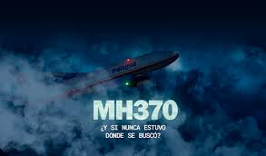

Archivo Confidencial: Vuelo MH370

El vuelo MH370 de Malaysia Airlines desapareció el 8 de marzo de 2014 mientras viajaba desde Kuala Lumpur, Malasia, hacia Beijing, China. A bordo viajaban 239 personas entre pasajeros y tripulación.
El avión era un Boeing 777, considerado uno de los aviones más seguros y avanzados del mundo.
Poco después del despegue, el avión perdió contacto con los controladores aéreos. Lo más extraño fue que cambió de rumbo inesperadamente antes de desaparecer de los radares civiles.
Durante varias horas continuó enviando señales automáticas vía satélite, indicando que seguía volando mucho tiempo después de haber desaparecido.
La búsqueda involucró a numerosos países, incluyendo Malasia, China, Australia y Estados Unidos.
Se utilizaron barcos, aviones, submarinos y tecnología satelital para intentar localizar el avión.
La operación se convirtió en una de las búsquedas más costosas de la historia.
Años después de la desaparición se encontraron piezas del avión en diferentes costas del océano Índico.
Estos hallazgos confirmaron que el avión terminó en el mar, aunque nunca se recuperaron completamente las cajas negras.
La desaparición del MH370 generó cambios en los sistemas de rastreo y monitoreo de aeronaves en todo el mundo.
También impulsó nuevas investigaciones sobre tecnología satelital y seguridad aérea.
La falta de evidencia definitiva y la imposibilidad de recuperar completamente el avión han impedido conocer exactamente qué ocurrió.